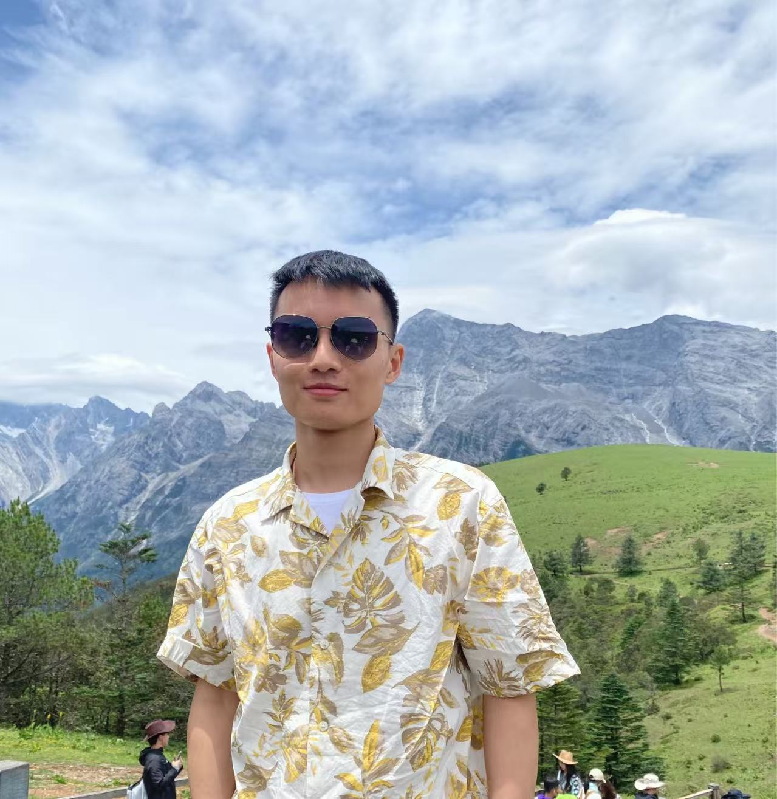

|  | Cheng Xu (徐成) |
| Postdoctoral Research Fellow @ PolyU | |
| Ph.D. @ SCUT | |
| E-mail: cs-cheng.xu [at] polyu.edu.hk; cschengxu [at] gmail.com | |
| Google Scholar GitHub |
I am currently a Postdoctoral Research Fellow in the Center for Smart Health at The Hong Kong Polytechnic University, working with Prof. Jing Qin since 2023. I received my Ph.D. degree in June 2023 from South China University of Technology, under the supervision of Prof. Xuemiao Xu and Prof. Shengfeng He.
My research lies in the fields of computer vision, image/video processing, generative models, and medical image analysis.
News
- [04/2025]: One paper about one-shot 3D human rendering accepted by TVCG!
- [03/2025]: One paper about open-set mix-domain adaptation accepted by TCSVT!
- [02/2025]: Served as a Guest Editor for Special Issue Recent Advanced in Applications of Machine Learning and Computer Vision with Electronics.
- [01/2025]: One paper about point cloud domain generalization accepted by TPAMI!
- [12/2024]: Two papers about continual segmentation and tongue diagosis accepted by AAAI 2025!
- [08/2024]: One paper about reversible face anonymization accepted by TIFS!
- [07/2024]: One paper about portrait shadow removal accepted by ACM MM 2024 as Oral presentation (3.97%)!
- [07/2024]: One paper about 3D dance generation accepted by ECCV 2024 as Oral presentation (2.0%)!
- [07/2023]: One paper about one-shot video inpainting accepted by ICCV 2023!
- [11/2022]: One paper about portrait-to-anime translation accepted by TVCG!
- [10/2022]: One paper about multi-view face synthesis accepted by TNNLS!
- [07/2022]: One paper about human image synthesis accepted by TOMM!
- [05/2022]: One paper about cartoon effect and content separation accepted by TVCG!
- [06/2021]: One paper about multi-view face synthesis accepted by TIP!
Experience
| Sep 2023 - Present | Postdoctoral Research Fellow at Center for Smart Health, PolyU, working with Prof. Jing Qin |
| Sep 2018 - Jan 2019 | Teaching Assistant in SCUT, Fundamentals of Computers (MOOC) |
| Sep 2016 - June 2018 | Teaching Assistant in SCUT, Advanced Programming Language (C++) |
Publications
- [Highlight]
- [Full List]
- [G o o g l e Scholar]
- ( # equal contribution * corresponding author.)
Conference Papers
Journal Papers
Professional Activities
- Guest Editor:
- Electronics
- Program Committee:
- International Conference on Learning Representations (ICLR)
- Association for the Advancement of Artificial Intelligence (AAAI)
- International Joint Conference on Artificial Intelligence (IJCAI)
- IEEE International Conference on Multimedia and Expo (ICME)
- International Joint Conference on Neural Networks (IJCNN)
-
Journal Reviewer:
- International Journal of Computer Vision (IJCV)
- IEEE Transactions on Information Forensics and Security (TIFS)
- IEEE Transactions on Neural Networks and Learning Systems (TNNLS)
- Knowledge Based System (KBS)
Awards
- Outstanding Award of the National Postdoctoral Forum on the Development & Application of Artificial Intelligence, 2019
- Outstanding Graduate of Hunan Province, 2016
- Weizhizhu High-Potential IT Undergraduate Scholarship (1/100), 2015
Thanks to Chaofeng for the website design.